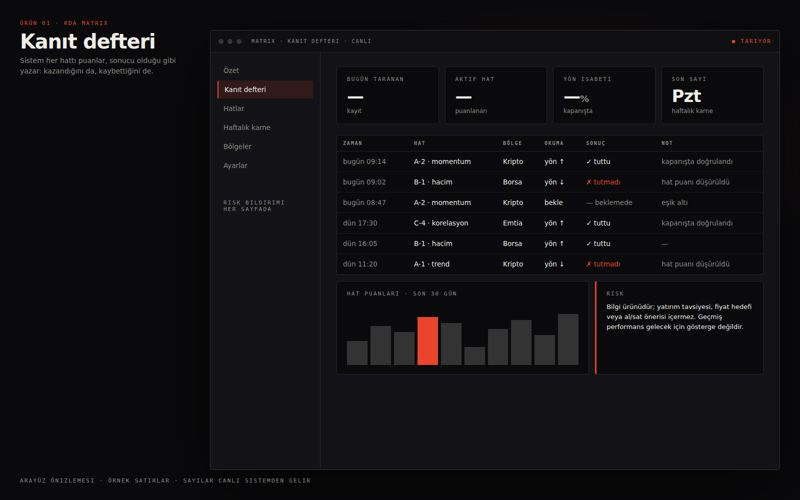
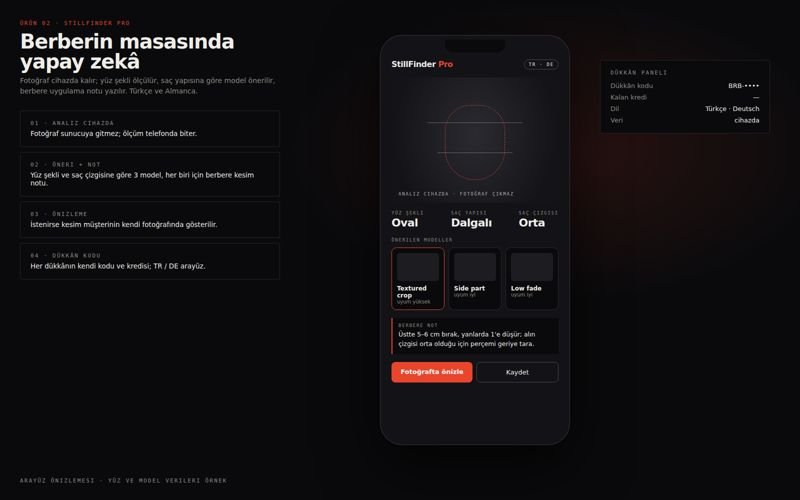
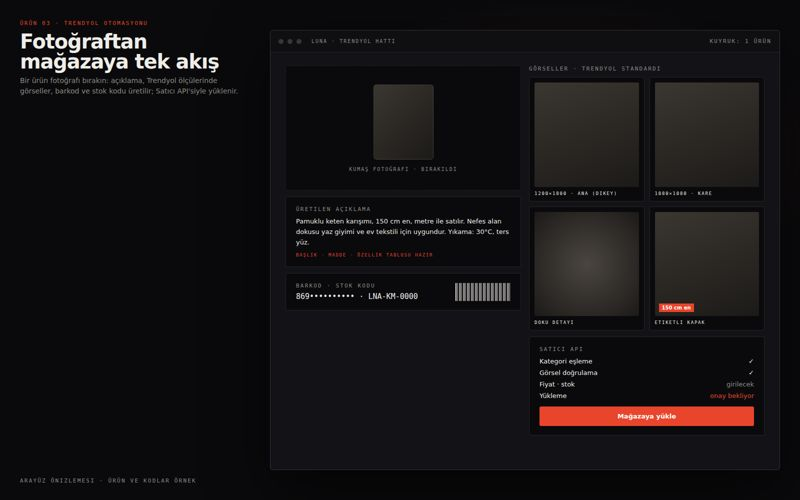
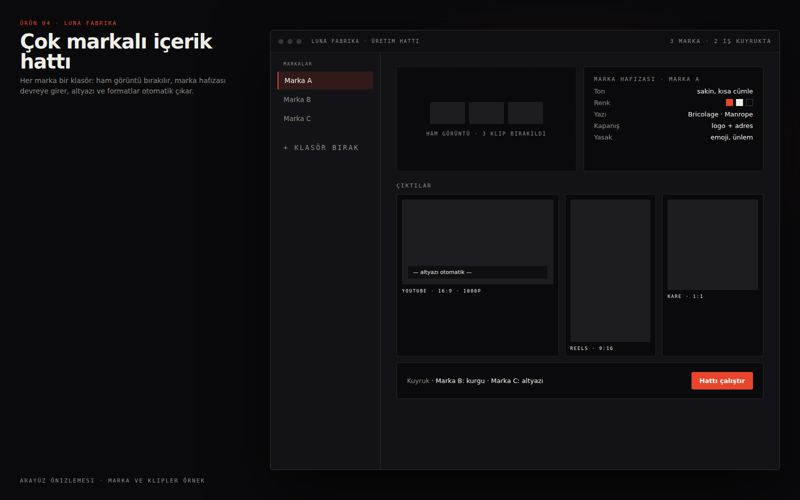
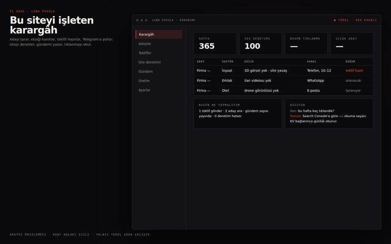
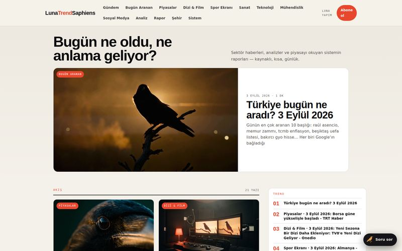

Luna Yapım · Yazılım & Yapım · Bursa
Yazılım yazan,kamerayı kendikullanan stüdyo.
İnşaat ve emlak için 3D görselleştirme, sanayi için ürün animasyonu, markalar için tanıtım filmi ve sosyal medya üretimi; hepsinin arkasında kendi yazdığımız otomasyon. Bursa merkezli, 81 ilde.
KaydırBursa · Yazılım · Otonom Sistemler · Prodüksiyon
Kendi yazılımlarımızı kendimiz yazıyoruz: piyasayı tarayan otonom sistemler, e-ticaret otomasyonu, berber danışmanı, içerik üretim hatları. Aynı mühendisliği müşterilerimiz için de kuruyoruz — ve gerektiğinde kamerayı da biz alıyoruz.
Bir işin altı bölümü
Kalabalık bir ekip değil, uçtan uca tek zincir: set, drone, render, renk, kurgu, yayın. Kareleri sürükle; her bölüm kendi sayfasına gider.
 01 · Set ve ışıkYapay zekâ ile üretilmiş görsel
01 · Set ve ışıkYapay zekâ ile üretilmiş görselTek sert ışık, sis ve siyah bayrak. Tanıtım filmi, klip, düğün — çekimin dili burada belirlenir.
Prodüksiyon → 02 · HavadanYapay zekâ ile üretilmiş görsel
02 · HavadanYapay zekâ ile üretilmiş görselSHGM belgeli pilot, 4K havadan görüntü, 81 il. Şafak ve mavi saat planlaması bizde.
Drone çekimi → 03 · RenderYapay zekâ ile üretilmiş görsel
03 · RenderYapay zekâ ile üretilmiş görselTel kafesten fotogerçekçi kareye: mimari render, proje animasyonu, sanal tur.
3D modelleme → 04 · RenkYapay zekâ ile üretilmiş görsel
04 · RenkYapay zekâ ile üretilmiş görselRenk düzenleme ve kodlama masada biter; sitede öncesi/sonrası ile gösteriyoruz.
Stüdyo →Şantiye, fabrika, otel, düğün: kamera nereye gerekiyorsa oraya.
İl sayfaları →Bu siteyi, bültenini ve asistanını yazan sistem; müşteriler için de aynısını kuruyoruz.
Yazılım →Aşağıdaki sayılar pazarlama cümlesi değil — depodaki dosyalardan sayıldı. Sayamadığımız hiçbir şey burada yazmıyor.
Müşteri işi beklerken oturmuyoruz; kendi ürünlerimizi geliştiriyoruz. Her biri gerçek bir ihtiyaçtan doğdu ve sahada çalışıyor.

Arayüz önizlemesi i · YayındaPiyasayı sürekli tarayan otonom araştırma sistemi. Kendi okuma hatlarını puanlar, her sonucu açık bir kanıt defterine yazar — kazandığı kadar kaybettiğini de.
Paneli aç →
Arayüz önizlemesi ii · Berberler içinYapay zekâ saç stili danışmanı. Fotoğraftan yüz şeklini ölçer, saç profiline göre model önerir, kesimi fotoğraf üzerinde önizler. Türkçe ve Almanca.
İncele →
Arayüz önizlemesi iii · Satıcılar içinÜrün fotoğrafından mağazaya tek akış: açıklama metni, Trendyol standartlarında çoklu görsel, barkod ve stok kodu, satıcı API'si üzerinden yükleme.
İncele →
Arayüz önizlemesi iv · Markalar içinÇok markalı içerik üretim hattı. Klasöre atılan materyal marka hafızasına göre kurgulanır; altyazı ve çoklu format çıktısı otomatik.
İncele →
Arayüz önizlemesi v · Bu siteyi işletenAdayı tarar, eksiğini kanıtlar, teklifi hazırlar; siteyi denetler, gündemi yazar, tıklanmayı okur. Yalnız yerel ağda çalışır; müşteri için aynı mantıkla kurulur.
Nasıl çalışıyor →
Canlı yayın vi · Yayın · her sabahTürkiye bugün ne aradı, dolar ve altın kaç TL, maç hangi kanalda, vizyonda ne var — kaynaklı, tarihli, kısa. Yazan da yayınlayan da kendi sistemimiz.
Yayını aç →Ürünlerimizi kurarken öğrendiklerimizi müşterilerimiz için de kuruyoruz. Gereksiz yazılım yazmıyoruz — hangi işin otomatikleşmesi gerçekten zaman kazandırıyorsa onu.
Sürekli veri toplayan, kendi kararlarını puanlayan ve sonucunu denetlenebilir biçimde kaydeden sistemler.
Tekrar eden işleri devralan araçlar: veri toplama, raporlama, bildirim akışları, yönetim panelleri.
Mevcut iş akışınıza yapay zekâ katmanı: içerik üretimi, sınıflandırma, özetleme, karar desteği.
Hızlı ve ölçülebilir siteler, API entegrasyonları, sunucu kurulumu, izleme ve bakım.
Şirketin yapım bölümü. İnşaat ve emlak tarafında 3D modelleme ve görselleştirme, sanayi tarafında ürün animasyonu, sahada gerçek kamera işi — üçü de aynı ekipten çıkıyor.
Konut projesi, villa, site ve ticari yapı için mimari render, proje tanıtım animasyonu, iç mekân görselleştirme, yerleşim maketi ve 360° sanal tur. Temel atılmadan maket satışı.
İncele → yeniFirmaların ürünlerini ve hizmetlerini 3D modelleme ve animasyonla videoya çeviriyoruz: makine çalışma prensibi, kesit anlatım, üretim hattı, hizmet süreci.
İncele → yeniMüzik klibi, marka klibi ve sanatçı tanıtım videosu. Senaryodan sinematografiye, FPV drone'dan renk düzenlemeye kadar tek elden prodüksiyon.
İncele →Villa, konut projesi, fabrika ve showroom tanıtımı. Bitmiş yapıda gerçek çekim, bitmemiş projede 3D — ikisini tek filmde birleştiriyoruz.
Arsa, şantiye ve proje çevresinin havadan 4K görüntüsü; FPV ile tek nefeste akan mekân turu.
Düzenli Reels ve tanıtım videosu üretimi. Markanın diline oturan içerik, tek elden.
Senaryodan altyazıya yapay zekâ destekli üretim; aynı işten çok sayıda dil ve format varyasyonu.
Müşteri adıyla, kendi arşivimizden. Fareyi üzerinde tut — sessiz oynar; tıklayınca tam sürüm açılır.
Fareyi bir işin üzerinde tut — sessiz oynar. Tıklayınca sesli açılır. Kategoriye göre süzebilirsin.
3D modelleme ve animasyon tamamen uzaktan yürüyor — Türkiye'nin her ilinden proje alıyoruz. Kamera ve drone gerektiren işlerde Bursa ve çevre illerde kendi ekibimizle, uzak illerde çözüm ortaklarımızla sahadayız. Her il için o ilin inşaat piyasası, sanayi profili ve coğrafyasıyla ayrı sayfa yazdık.

İletişim
Aklındaki işi anlat — nasıl kurulacağını, ne kadar süreceğini ve neye mal olacağını konuşalım. Genelde aynı gün dönüyoruz.